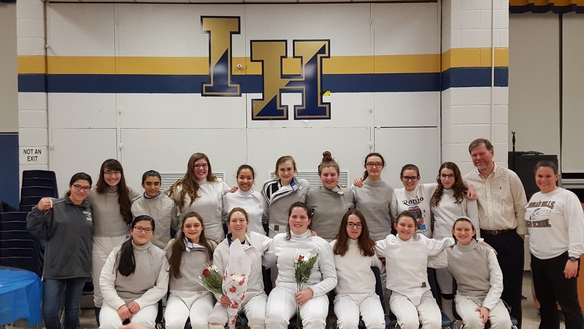

Liz Fencing in High School

Starting in the winter of her junior year of high school, Liz decided she wanted to start fencing. This came sort of out of nowhere, although she did have several friends who were also on the fencing team prior to her joining the team. During her two years on the team, she fenced Epee. During both years of being on the team she participated in the County tournament and the Santelli tournament, although she cannot find any statistics for either year for these events.
During her first year of fencing, she had a season total of 5 bout wins, and 9 bout losses as seen in the table bellow
| 2016-2017 Season | ||||
|---|---|---|---|---|
| Date | Opponent | Result | W | L |
| 12/19/2016 | @ Holy Angels | L 11-16 | - | 2 |
| 12/20/2016 | vs. West Milford | W 21-6 | 1 | - |
| 12/22/2016 | vs. Lakeland | W 18-9 | - | - |
| 01/05/2017 | @ Bergen Tech | L 7-20 | - | - |
| 01/10/2017 | @ Wayne Valley | L 10-17 | - | - |
| 01/17/2017 | vs. Teaneck | W 14-13 | - | - |
| 01/19/2017 | vs. Wayne Hills | L 12-15 | - | - |
| 01/25/2017 | @ Fair Lawn | W 18-9 | 1 | 1 |
| 02/08/2017 | vs. Ramapo | W 16-11 | 1 | 2 |
| 02/10/2017 | vs. Pompton Lakes | W 15-12 | 1 | 1 |
| 02/16/2017 | @ Northern Highlands | L 10-17 | - | 2 |
| 02/17/2017 | vs. Passaic Valley | W 17-10 | 1 | 1 |
| Total | 5 | 9 | ||
Here are Liz's stats for her senior year. During this season the team qualified for states, however they lost in the first round of states to Millburn. The Epee squad also qualified for states squads, however the statistics of that tournament are unavailable (or at least Liz doesn't know where to find it). In total for her senior season Liz had 6 wins and 7 losses, which is definately an improvement upon her junior season.
| 2017-2018 Season | ||||
|---|---|---|---|---|
| Date | Opponent | Result | W | L |
| 12/19/2017 | @ Bergen Tech | L 8-19 | - | 1 |
| 01/03/2018 | vs. Passaic Tech | W 19-8 | 1 | - |
| 01/11/2018 | @ Ramapo | W 19-8 | 1 | - |
| 01/16/2018 | @ Wayne Hills | L 9-18 | - | - |
| 01/18/2018 | vs. Fair Lawn | L 8-19 | 1 | - |
| 01/25/2018 | @ Northern Highlands | W 14-13 | - | - |
| 01/29/2018 | vs. Pompton Lakes | L 12-15 | - | - |
| 01/31/2018 | @ Millburn | L 11-16 | 1 | - |
| 02/06/2018 | vs. West Milford | W 18-9 | - | 1 |
| 02/08/2018 | vs. Holy Angels | W 16-11 | - | - |
| 02/13/2018 | vs. Wayne Valley | L 10-17 | - | 1 |
| 02/15/2018 | vs. Lakeland | W 20-7 | 2 | 1 |
| 02/16/2018 | vs. Teaneck | L 10-17 | - | 3 | Total | 6 | 7 |
The data from these two tables is from here for her junior year and here for her senior year